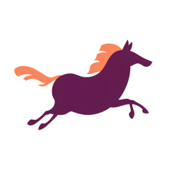

Helårlig kommunikasjonskonsept for trening, aktivitet og idrett blant studenter i Trondheim, Gjøvik og Ålesund.
Sit vil gå fra å være et treningssenter til å bli forstått som en helhetlig velferdsaktør som bruker aktivitet som virkemiddel.
Sit har invitert tre byråer til pitch. Her er det de forventer av oss innen 16. mars.
Sit og valgt byrå samarbeider om endelig budskapsformulering. Pitchen viser retning, ikke ferdig materiale.
Klikk for å utforske. Marker gjerne hvilke retninger som appellerer.
Ved å vise bredden, fra volleyball til fjelltur til yoga, signaliserer vi at det finnes noe for alle. I Byron Sharp-termer utvider dette Sits category entry points dramatisk. «This Girl Can» (Sport England) normaliserte alle former for bevegelse og fikk 3 millioner inaktive kvinner i gang.
1 av 3 studenter sliter psykisk. Ved å ramme inn aktivitet som en del av studentlivet, knytter vi oss til noe større enn treningsbransjen. «Fitness Buddies»-programmet ved amerikanske universiteter ga bedre trivsel og lavere stress.
Du kan ikke reposisjonere med tilleggsinformasjon. Du må gjøre noe som bryter forventningen. Denne tilnærmingen er «modig», en av Sits egne verdier. Gymshark #Gymshark66 solgte ikke produkter i kampanjen, men bygde community. 45 millioner visninger.
Tilhørighetsbarrieren kan løses med sosiale mekanikker. 1 av 4 kvinner sa at tilstedeværelsen av noen som lignet dem ville gjort aktivitet mer innbydende. Strava Clubs har firedoblet seg. Grupper som løper og sykler sammen som sosial infrastruktur.
Skriv gjerne svarene her. De sendes til oss når du er ferdig.
Har du tanker, svar eller favoritter? Trykk på knappen under, så samler vi alt og tar det med videre inn i idéfasen.